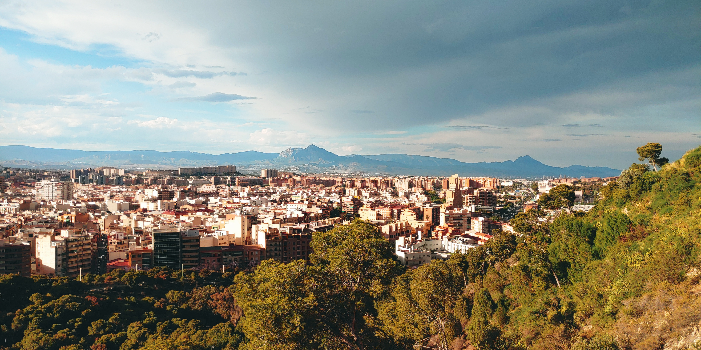

About Me
I love traveling and discovering new places, both near and far. Every journey is an opportunity for me to see something different and experience the world from a new perspective. I enjoy meeting new people, hearing their stories, and learning about their everyday lives.
One of my favorite parts of traveling is trying local cuisine. I believe that food is a big part of every culture, and tasting new dishes makes each trip even more memorable. Sometimes it’s a small street food stand, other times a cozy local restaurant — both can be unforgettable.
I also like to slow down during my trips. Not every moment has to be busy or planned. I enjoy taking a pause, observing my surroundings, and trying to capture the atmosphere of a place — whether through photos or simply by being present.
Favorite Destinations

Mountains
Beautiful views and fresh air.

Cities
Culture, architecture and people.

Beaches
Peaceful places to relax.